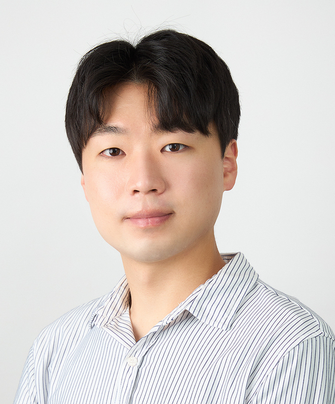
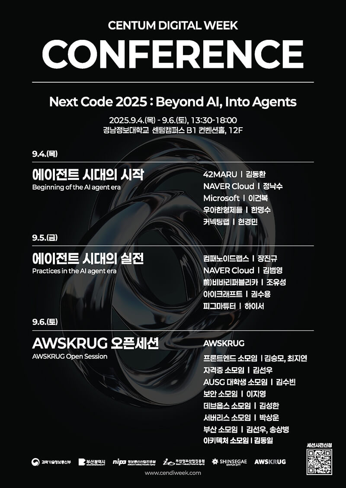
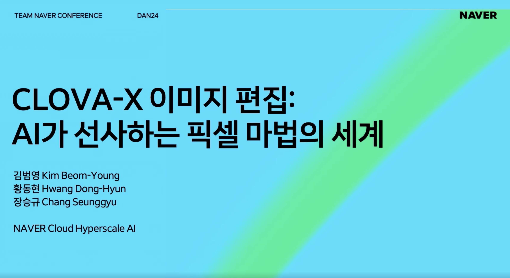
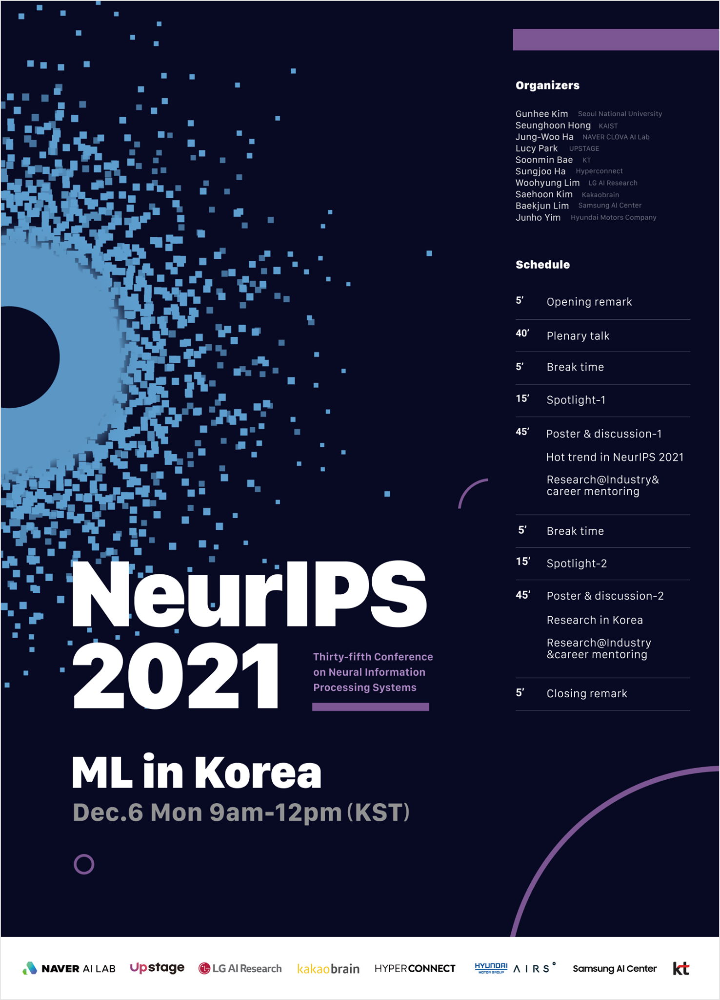

Beomyoung Kim 김범영
AI Research Engineer, NAVER Cloud (Image Vision)
I'm an AI Research Engineer at NAVER on a mission to build AI that truly understands the visual world. My journey began in core visual recognition — segmentation, detection, and matting — with 14+ papers at CVPR, ICCV, ECCV, NeurIPS, and AAAI (572 citations, h-index 9). I'm now extending that perception expertise into multimodal & vision-language models — perception-grounded VLMs and visual reasoning agents that don't just see, but reason and act. My north star: research that ships — turning frontier ideas into products used by millions. I'm also pursuing my Ph.D. at KAIST alongside full-time research at NAVER.

What I work on
Multimodal & Vision-Language Models NOW @ NAVER
Extending my visual-recognition expertise to vision-language models — multimodal LLMs/VLMs with fine-grained visual perception and grounding, and visual reasoning agents that perceive, localize, and reason over images.
Vision Foundation Models & Matting
Promptable, zero-shot segmentation & matting for anything; label-efficient human matting.
ZIM (ICCV'25 Highlight) · WSSHM
Label-Efficient Segmentation
Weakly- and semi-supervised semantic & instance segmentation from cheap supervision.
PointWSSIS · BESTIE · DRS · WSSS-BED
Continual & Efficient Learning
Class-incremental and panoptic continual segmentation; lightweight, efficient models.
ECLIPSE · SSUL · EResFD · PfLayer
News
Selected Publications
A diagnostic framework for 3D spatial reasoning that turns silent perception failures in visual program synthesis into typed diagnoses, driving targeted program repair to rival frontier VLMs without task-specific training.
Learning from Adversity: Semantic-Aware Mask Refinement through Adversarial Perturbation
ZIM: Zero-Shot Image Matting for Anything
Towards Label-Efficient Human Matting
Rethinking Saliency-Guided Weakly-Supervised Semantic Segmentation
ECLIPSE: Efficient Continual Learning in Panoptic Segmentation with Visual Prompt Tuning
EResFD: Rediscovery of the Effectiveness of Standard Convolution for Lightweight Face Detection
The Devil is in the Points: Weakly Semi-Supervised Instance Segmentation via Point-Guided Mask Representation
Beyond Semantic to Instance Segmentation via Semantic Knowledge Transfer and Self-Refinement
Learning Features with Parameter-Free Layers
TricubeNet: 2D Kernel-Based Object Representation for Weakly-Occluded Oriented Object Detection
SSUL: Semantic Segmentation with Unknown Label for Exemplar-based Class-Incremental Learning
Discriminative Region Suppression for Weakly-Supervised Semantic Segmentation
3D Point Cloud Upsampling and Colorization using GAN
Fully Automated Valet Parking System Based on Infrastructure Sensing
Real-World Impact
- ZIM — Zero-Shot Image Matting. Promptable matting foundation model behind image-editing experiences. demo →
- CLOVA-X Image Editing. Generative image editing, presented at TEAM NAVER DAN 24. talk →
- FaceSign — CLOVA Vision. Face recognition service for NAVER identity verification & payments. learn more →
Experience & Education
Conference & Journal Reviewer
Invited Talks

Centum Digital Week — Next Code 2025
"Beyond AI, Into Agents." A researcher's story from the AI agent era.
event →
TEAM NAVER Conference DAN 24
CLOVA-X Image Editing: the world of pixel magic delivered by AI.
session →Jinhaksa Catch Career-Con
How to land an AI research engineer role — career mentoring (NAVER CLOVA).

NeurIPS 2021 Social — ML in Korea
SSUL: Semantic Segmentation with Unknown Label for Class-Incremental Learning.
Inha University — Invited Lecture
Weakly-Supervised Instance Segmentation (CVPR 2022), hosted by Prof. Chaeeun Rhee.